Tux Paint の使い方
Tux Paint の起動
Linux または Unix のユーザー
KDE あるいは GNOME のメニューの「グラフィックス」以下に、起動アイコンが設定されているはずです。
その他、シェルプロンプト（例："$"）で次のコマンドを実行する方法があります：
$ tuxpaint
エラーが発生した場合は、端末にその内容が表示されます。（標準エラー出力）
Windows のユーザー
|
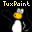 Tux Paint |
インストーラーを用いて Tux Paint をインストールする際、スタート・メニューやデスクトップにショートカットを作成するかどうかが選択できます。ショートカットを作成していれば、これらのアイコンから簡単に Tux Paint を起動できます。
ポータブル版（ZIPファイル版）をダウンロードして Tux Paint をインストールした場合や、インストーラーでショートカットを作成しなかった場合は、"Tux Paint"のフォルダにある "tuxpaint.exe" のアイコンをダブルクリックします。
インストーラーを用いた場合、「Tux Paint」のフォルダは、通常、"C:\Program Files\" に配置されます。（インストール時に、これを変更することもできます）
ZIP ファイルを用いた場合、「Tux Paint」のフォルダは、任意の場所に配置できます。
macOS のユーザー
"Tux Paint" のアイコンをダブルクリックします。
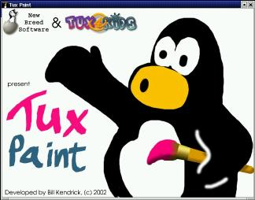
起動画面
Tux Paint を起動すると、タイトル画面が表示されます。
プログラムの読み込みが完了すると、何かキーを押すかマウスのクリックにより次に進みます。（タイトル画面は、約5秒後に自動的に閉じます）
メインの画面
メインの画面は、次の各部に分けられます：
- 左側: ツールバー「どうぐ」
-
ツールバーには、描画や編集を行うためのアイコンがあります。
- 中央部: 描画キャンバス
-
中央部の最も広い領域が描画キャンバスです。ここが絵を描く部分になります！
💡 注: 描画キャンバスのサイズは、Tux Paint のウィンドウサイズに応じて変わります。Tux Paint のウィンドウサイズは、Tux Paint 設定ツールを用いて変更できます。その他の方法については、各種設定についてのドキュメントを参照してください。
- 右側: セレクタ
-
セレクタに表示される内容は、使用しているツールに応じて変わります。例えば、「ふで」ツールでは、様々な種類の筆が表示され、「はんこ」ツールでは、はんこの画像が表示されます。
- 下部: カラーパレット「いろ」
-
When the active tool supports colors, a palette of colors choices will be shown near the bottom of the screen. Click one to choose a color, and it will be used by the active tool. (For example, the "Paint" tool will use it as the color to draw with the chosen brush, and the "Fill" tool will use it as the color to use when flood-filling an area of the picture.)
On the far right are three special color options:
- The "color picker" (which has an outline of an eye-dropper) allows you to pick a color found within your drawing. A shortcut key is available to access this feature quickly; see below.
- The rainbow palette allows you to pick a color from within a box containing thousands of colors.
- The "color mixer" (which has silhouette of a paint palette) allows you to create colors by blending primary additive colors — red, yellow, and blue — along with white (to "tint"), grey (to "tone"), and black (to "shade"). The ratios of colors added are shown at the bottom.
When the active tool supports colors, a shortcut may be used to access the "color picker" option more quickly. Hold the
[Control]key while clicking, and the color under the mouse cursor will be shown at the bottom. You may drag around to canvas to find the color you want. When you release the mouse button, the color under the cursor will be selected. If you release the mouse outside of the canvas (e.g., over the "Tools" area), the color selection will be left unchanged. (This is similar to clicking the"Back" button that's available when bringing up the "color picker" option via its button the color palette.)⚙ Note: You can define your own colors for Tux Paint. See the "Options" documentation.
- 最下部: ヘルプエリア
-
画面の一番下の部分では、Linux ペンギンの Tux が、様々なヒントや関連情報をご提供します。
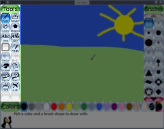
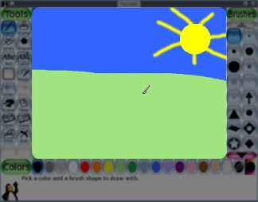
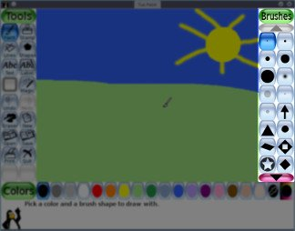
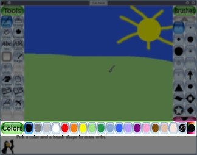
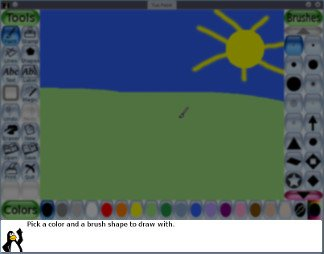
各種のツール
描画ツール
- ペイントブラシ「ふで」
-
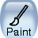
右側のセレクタから筆の種類を、下のパレットから色を選んで、フリーハンドで描画します。
ボタンを押したままマウスを動かすと、描画できます。
アニメーションブラシ — 描画中に形状が変化します。例として、ブドウ形のブラシが挙げられます。このタイプのブラシの選択ボタンには、小さなフィルムのアイコンが付いています。
向きのあるブラシ — 描いている方向によって異なる形を描きます。 例として、Tux Paint に含まれる矢印ブラシがあります。 これらのブラシの選択ボタンには、小さな8方向の矢印のアイコンが付いています。
また、いくつかのブラシは、方向とアニメーションを併せ持ちます。例として、猫やリスのブラシがあります。このタイプのブラシの選択ボタンには、小さなフィルムと８方向の矢印のアイコンが付いています。
描画中にはサウンドが流れます。筆の大きさが大きいほど、低い音になります。
Brush Spacing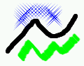
The space between each position where a brush is applied to the canvas can vary. Some brushes (such as the footprints and flower) are spaced, by default, far enough apart that they don't overlap. Other brushes (such as the basic circular ones) are spaced closely, so they make a continuous stroke.
The default spacing of brushes may be overridden using by clicking within the triangular-shaped series of bars at the bottom right; the larger the bar, the wider the spacing. Brush spacing affects both tools that use the brushes: the "Paint" tool and the "Lines" tool.
⚙ Note: If the "
nobrushspacing" option is set, Tux Paint won't display the brush spacing controls. See the "Options" documentation. - 「はんこ」ツール
-
「はんこ」ツールは、スタンプやステッカーを集めたようなものです。馬や木、月など、あらかじめ用意された様々な写真やイラストを絵に貼り付けることができます。
マウスのカーソル動きに応じて画像の輪郭が表示され、貼り付け位置と大きさがわかります。

スタンプは、動物、植物、宇宙、乗り物、人物といった多くのカテゴリに分類されています。セレクタの左右の矢印のボタンを使ってカテゴリを切り替えることができます。
スタンプを絵に貼り付ける前に、以下の様々な効果を適用することができます（スタンプの種類によって異なります）：
- スタンプには色をつけることができるものがあります。その場合、カラーパレットが有効になり、スタンプを絵に貼り付ける前に色を選ぶことができます。
- スタンプは、右下の三角形のバーの中をクリックすることで、縮小・拡大することができます。
- 多くのスタンプは、右下の操作ボタンを使って、上下・左右に反転させることができます。
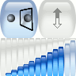
個々のスタンプごとに効果音を設定することができます。画面下部の左側のヘルプエリア（Linux ペンギン "Tux"の近く）にあるボタンを押すと、効果音を再生することができます。
⚙ Note: If the "
nostampcontrols" option is set, Tux Paint won't display the Mirror, Flip, Shrink and Grow controls for stamps. See the "Options" documentation. - 「せん」ツール
-
様々な種類の筆と好きな色を使って直線を描くツールです。
線を引き始めたい場所でクリックして、そのままマウスを動かすと、描かれる線の位置が細い「ゴムバンド」のような線で示され、画面の下には、線の角度が表示されます。右にまっすぐ伸びる線は0度、上にまっすぐ伸びる線は90度、左にまっすぐ伸びる線は180度、下にまっすぐ伸びる線は270度、という具合です。
マウスを放すと、バネのような効果音とともに線が描画されます。
アニメーション対応のブラシでは、線に沿って形が変化します。 指向性のブラシでは、線の角度に応じて異なる形状を表示します。 さらに、アニメーションと指向性の両方を備えたブラシもあります。 詳しくは、上記の「ふで」の項をご覧ください。
Different brushes have different spacing, leaving either a series of individual shapes, or a continuous stroke of the brush shape. Brush spacing may be adjusted. See "Paint", above, to learn more.
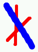
- 「かたち」ツール
-
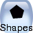
簡単な図形を描きます。
まず、円、正方形、楕円など、描きたい図形を、右側のセレクタから選択します。
右下のオプションボタンで「かたち」ツールの動作を選択します：
- 真ん中から広げる
-
The shape will expand from where you initially clicked, and will be centered around that position.
📜 This was Tux Paint's only behavior through version 0.9.24.)
- 角から広げる
-
The shape will extend with one corner starting from where you initially clicked. This is the default method of most other traditional drawing software.
📜 This option was added starting with Tux Paint version 0.9.25.)
⚙ 注: "
noshapecontrols" オプションをつけて起動するなどして、「かたち」ツールの動作の制御を無効にした場合、オプションボタンは表示されず、真ん中から図形を広げる動作になります。図形を描くには、キャンバス上でマウスをクリックし、そのままマウスを動かして図形を広げます。楕円や長方形のように縦横比を変えられる図形と、正方形や円のように縦横比を変えられない図形があります。
For shapes that can change proportion, the aspect ratio of the shape will be shown at the bottom. For example: "1:1" will be shown if it is "square" (as tall as it is wide); "2:1" if it is either twice as wide as it is tall, or twice as tall as it is wide; and so on.
図形を広げ終わったらマウスを放します。
- 通常の動作
-
ここで、キャンバス上でマウスを動かして図形を回転させることができます。回転した図形の角度は画面の下に表示されます（「せん」ツールと同様）。
最後にもう一度マウスをクリックして、図形が完成します。
- 簡易描画モード
-
If the "simple shapes" option is enabled, the shape will be drawn on the canvas when you let go of the mouse button. (There's no rotation step.)
⚙ See the "Options" documentation to learn about the "simple shapes" ("
simpleshapes") option.
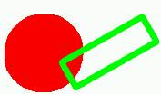
- 「ぬる」ツール
-
「ぬる」ツールは、描画の連続した領域を好きな色で塗りつぶします。以下の3 つの塗りつぶしオプションが用意されています：
- たんしょく — 領域を一つの色で塗りつぶします。
- ふで — フリーハンドでドラッグして、領域を一つの色で塗りつぶします。
- せんけい — 領域をクリックしてからドラッグすると、ドラッグした方向に向かって色が薄くなるようにグラデーションをつけて塗りつぶします。
- ほうしゃ — クリックした場所を中心に周りに向かって放射状に色が薄くなるようにグラデーションをつけて塗りつぶします。
📜 Note: Prior to Tux Paint 0.9.24, "Fill" was a Magic tool (see below). Prior to Tux Paint 0.9.26, the "Fill" tool only offered the 'Solid' method of filling.
- 「まほう」ツール（特殊効果）
-
「まほう」ツールは、様々な特殊なツールを集めたものです。右側のセレクタで、「まほう」の効果を選択することができます。効果を適用する方法は、クリック＋ドラッグ、単なるクリックなど、ツールごとに様々です。
クリック＋ドラッグを使用するツールの場合、右側のセレクタの下部左側にある「描画」を表すボタンが有効になります。１クリックで画面全体に効果を及ぼすツールの場合、右側の「画面全体」を表すボタンが有効になります。
「magic-docs」フォルダ内のドキュメント「まほう」ツールの一覧もお読みください。
- けしゴム
-
このツールは「ふで」ツールに似ています。クリック（または、クリック＋ドラッグ）をした部分が消されます。（消した部分は、白あるいはその他の色、また、レイヤーキャンバスなど、絵によって異なる状態に戻ります。）
いくつもの大きさの正方形と円形の消しゴムがあります。
正方形の輪郭がマウスカーソルの位置に表示され、絵のどの部分が消されるかを示します。
消している間、「キュッキュッ」と擦って消す効果音が流れます。
そのほかの操作
- "Undo" and "Redo" Commands
-
Clicking the "Undo" button will undo (revert) the last drawing action. You can even undo more than once!
⌨ 注: キーボードで
[Control / ⌘]+[Z]を押しても取り消しできます。Clicking the "Redo" button will redo the drawing action you just un-did via the "Undo" command.
「とりけし」操作の後、描画を行っていなければ、取り消した全ての操作を元に戻せます！
⌨ 注: キーボードで
[Control / ⌘]+[R]を押してもやりなおしできます。 - 「さいしょから」
-
「さいしょから」のボタンを押すと、新規に絵を描き始めることができます。ダイアログ画面が表示され、キャンバスの背景色やレイヤー画像（後述）を選べます。
⌨ 注: キーボードで
Special Solid Background Color Choices[Control / ⌘]+[N]を押しても新規作成ができます。
レイヤー画像Along with the preset solid colors, you can also choose colors using a rainbow palette or a "color mixer". These operate identically to the options found in the color palette shown below the canvas when drawing a picture. See Main Screen > Lower: Colors > Special color options for details.
レイヤー画像には、塗り絵のページのようなもの（白黒の線で描かれ、色を塗ることができる）や、前景レイヤーと背景レイヤーに挟まれた部分に絵を描ける３Ｄ画像のようなものがあります。
また、このほかに、背景レイヤーだけの画像も用意されています。
「消しゴム」ツールを使用すると、元のレイヤー画像が消されずに残ります。また、マジックツールの「反転」と「ミラー」は、レイヤー画像も反転させます。
レイヤー画像は、その上に絵を描いて保存すると新しい絵として保存され、元々のレイヤー画像自体は上書きされないので、後で（「さいしょから」ダイアログからアクセスして）何度でも使うことができます。
- 「ひらく」
-
「ひらく」をクリックすると、保存されている全ての作品のリストが表示されます。リストが画面に収まりきらない場合は、上下の矢印のボタンでリストをスクロールできます。
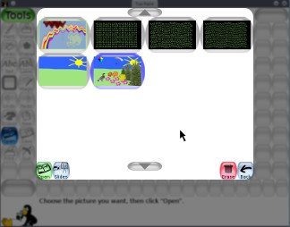
まず、絵をクリックして選択します…
-
左下にある緑色の「ひらく」ボタンで、選択した作品を読み込みます。
(または、開きたい作品をダブルクリックします）
💡 If choose to open a picture, and your current drawing hasn't been saved, you will be prompted as to whether you want to save it or not. (See "Save," below.)
-

右下にある茶色の「けす」(ゴミ箱) ボタンで、選択した作品を削除します。(本当に削除して良いか確認されます)
📜 注: Linux（バージョン 0.9.22以降）、Windows（バージョン 0.9.27以降）では、削除した作品は、デスクトップのゴミ箱に移動するので、後で元に戻すことができます。
-
「かきだす」のボタンをクリックすると、ユーザーの標準の画像フォルダ（例："
~/Pictures/TuxPaint/")に画像を出力します。
From the "Open" screen you can also:
-

Click the blue 'Slides' (slide projector) button at the lower left to go to slideshow mode. See "Slides", below, for details.
-
右下にある赤色の「もどる」ボタンを押すと、絵を描く画面に戻ります。
⌨ 注: キーボードで
[Control / ⌘]+[O]を押しても「ひらく」ダイアログを表示できます。 -
- 「セーブ」
-
描画中の作品を保存します。
一度も保存していない作品の場合、作品のリストに新しく追加されます。(つまり、新しいファイルを作成します)
💡 注: ファイル名の入力などを求めることはなく、カメラのシャッター音の効果音とともに、単に作品を保存します。
一度保存操作をした後や、「ひらく」コマンドで読みこんだ作品の場合、以前のバージョンを上書きするか、新しく追加して保存するかを確認します。

⚙ 注: "
saveover" オプション、または "saveovernew" オプションのどちらかが設定されている場合は、確認なしに保存されます。詳しくは"各種設定について"のドキュメントを参照してください。)⌨ 注: キーボードで
[Control / ⌘]+[S]を押しても作品を保存できます。 - 「いんさつ」
-
このボタンを押して作品を印刷します！
多くのプラットフォームでは、
[Alt]key (Mac では[Option]キー) を押しながら「いんさつ」ボタンを押すと、プリンターの設定画面が開きます。この機能は、フルスクリーンモードでは動作しない点に注意して下さい。- 印刷の無効化
-
オプションで "
noprint" を設定すれば、「いんさつ」のボタンを無効にすることができます。⚙ 詳細は "各種設定について" のドキュメントを参照して下さい。
- 印刷機能の制限
-
オプションで "
printdelay" を設定すれば、設定に応じた一定の時間ごとに１回だけしか印刷できなくなります。例えば、設定ファイルで "
printdelay=602" と設定すれば、1分間に1回だけ印刷ができます。⚙ 詳細は "各種設定について" のドキュメントを参照して下さい。
- 印刷コマンド
-
(Linux 及び Unix の場合のみ)
Tux Paint は、PostScript 形式の印刷データを作成し、外部プログラムに渡して印刷を行います。標準の設定では、以下のコマンドが使用されます：
lprこのコマンドは、設定ファイルの "
printcommand" オプションを設定することで変更できます。フルスクリーンモードでなければ "
[Alt]" キーを押しながら「いんさつ」ボタンを押すと、別の印刷プログラムを起動することができます。標準の設定では、KDE のグラフィカルな印刷ダイアログである、以下のプログラムが使用されます：kprinterこのコマンドは、設定ファイルの "
altprintcommand" オプションを設定することで変更できます。⚙ 詳細は "各種設定について" のドキュメントを参照して下さい。
- プリンターの設定
-
(Windows 及び macOS)
標準の設定では、「いんさつ」ボタンを押すと、通常使うプリンターに出力されます。
フルスクリーンモードでなければ、
[Alt](または[Option]) キーを押しながら「いんさつ」ボタンを押すと、オペレーションシステム標準の印刷ダイアログが表示され、出力先などの設定を変更することができます。"
printcfg" オプションを設定すれば、プリンターの設定の変更を保存することができます。"
printcfg" オプションを設定すると、プリンターの設定は、ユーザーの個人フォルダの "printcfg.cfg" から読み込まれ、変更した設定はこのファイルに保存されます。⚙ 詳細は "各種設定について" のドキュメントを参照して下さい。
- 印刷ダイアログのオプション
-
標準の設定では、印刷ダイアログは、
[Alt](または[Option]) キーを押しながら「いんさつ」ボタンを押した場合にのみ表示されます（Linux/Unixでは、"lpr" の代わりに "altprintcommand"; すなわち "kprinter" が起動します。）この印刷ダイアログの動作は、設定により変更できます。毎回必ず印刷ダイアログを表示させるには、コマンドラインで "
--altprintalways" を指定するか、設定ファイルで "altprint=always" を指定します。反対に、"--altprintnever" または "altprint=never" を指定することで、"[Alt]" (または "[Option]2) キーの効果を無効にできます。⚙ 詳細は "各種設定について" のドキュメントを参照して下さい。
- 「スライドショー」
-
「スライドショー」の機能は、「ひらく」ダイアログから利用できます。タックスペイントの中で、簡単なアニメーションや画像のスライドショーを再生することができます。また、選択した画像を元にアニメーションGIFを書き出すこともできます。
- 画像を選ぶ
-
「スライド」セクションに入ると、「ひらく」ダイアログと同じように、保存したファイルの一覧が表示されます。
次に、スライドショーで表示したい作品を、一つずつクリックして選択します。それぞれの画像の上に、スライドショーで表示される順番を表す数字が示されます。
選択された画像をもう一度クリックすると、選択を解除し、スライドショーから除外します。同じ画像もう一度クリックすると、をリストの最後に追加できます。
- 再生スピードの設定
-
画面左下「かいし」の隣にあるのスライドバーで、スライドショーやアニメーションGIFのスピードを調節できます。 スライドバーを一番左に設定すると、スライドショーの自動進行が無効になり、次のスライドに進むにはクリックが必要になります。（以下をご確認下さい）
💡 注: 最も遅いスピードに設定するとスライドの自動進行が無効になります。１枚ずつ手動でスライドを進めたい場合に、この設定を用いてください。（この動作はアニメーションGIFには適用されません）
- Tux Paint 上での再生
-
To play a slideshow within Tux Paint, click the 'Play' button.
💡 Note: If you hadn't selected any images, then all of your saved images will be played in the slideshow!
スライドショーの実行中は、
[Space]キー、[Enter]キー、[Return]キー、[右矢印]キーのいずれかを押すか、または、画面左下の "つぎへ" ボタンのクリックすれば、手動で次のスライドに進みます。[左矢印]キーを押すと前のスライドに戻ります。[Escape]キーを押すか、右下の「もどる」ボタンをクリックすると、スライドショーを終了し、作品選択の画面に戻ります。 - アニメーションGIFの書き出し
-
右下の「かきだす」ボタンをクリックすると、選択した画像を元にアニメーションGIFファイルを生成します。
💡 Note: At least two images must be selected. (To export a single image, use the 'Export' option from the main 'Open' dialog.) If no images are selected, Tux Paint will not attempt to generate a GIF based on all saved images.
アニメーションGIFの生成中に
[Escape]キーを押すと、処理を中断して「スライドショー」ダイアログに戻ります。
さらに「もどる」ボタンをクリックすれば、「ひらく」ダイアログに戻ります。
- プログラムの終了
-
「やめる」ボタンを押すか、Tux Paint のウィンドウを閉じるか、
[Escape]キーを押せば、Tux Paint が終了します。その際、本当に終了するかどうかを確認されます。
If you choose to quit, and you haven't saved the current picture, you will first be asked if wish to save it. If it's not a new image, you will then be asked if you want to save over the old version, or create a new entry. (See "Save" above.)
⚙ 注: "
startblank" オプションが設定されている場合を除き、終了時に保存した作品は、次に Tux Paint を起動するときに自動的に読み込まれます。⚙ 注: 「やめる」ボタンと
[Escape]キーによるプログラム終了は、"noquit" オプションで無効にできます。この場合、タイトルバーの「閉じる」ボタンか、
[Alt]+[F4]キーで終了することができます。また、上記のどちらの方法も使えない場合、
[Shift]+[Control / ⌘]+[Escape]のキーの組み合わせで終了できます。⚙ 詳細は "各種設定について" のドキュメントを参照して下さい。
- 効果音を消すには
-
今のところ画面上には消音のためのボタンはありませんが、
[Alt]+[S]キーを押すと効果音は無効になり、もう一度押すと有効になります。なお、"
nosound" オプションによって効果音が無効にされている場合は、[Alt]+[S]キーによる効果音の操作はできません。（親や先生が効果音を無効にすれば、この操作で音を出すことはできないということです）⚙ 詳細は "各種設定について" のドキュメントを参照して下さい。